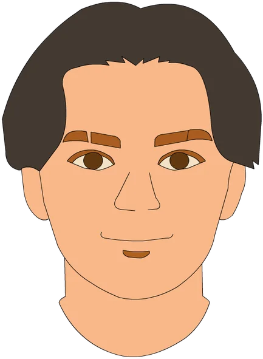
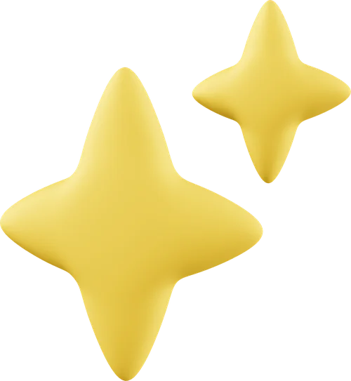

Hola, soy Sergio 👋
Diseñador visual y
creador audiovisual
Diseño gráfico · Animación 2D · Contenido digital

Soy Tecnólogo en Desarrollo de Videojuegos y Entornos Interactivos del SENA, con formación en diseño gráfico y animación 2D, y experiencia como diseñador en Organización Hércules, donde realicé fotografía de producto y retoque digital en Photoshop para la página web oficial.
Me caracterizo por ser perseverante, responsable y con alta capacidad de aprendizaje. Disfruto transformar ideas en piezas visuales claras y funcionales, y me interesa crecer profesionalmente dentro de equipos creativos.
Personajes chibi
Retratos
Model sheet

Diseño de niveles de videojuegos 2DFotografía y retoque de producto
El niño y la gata · paletas de color